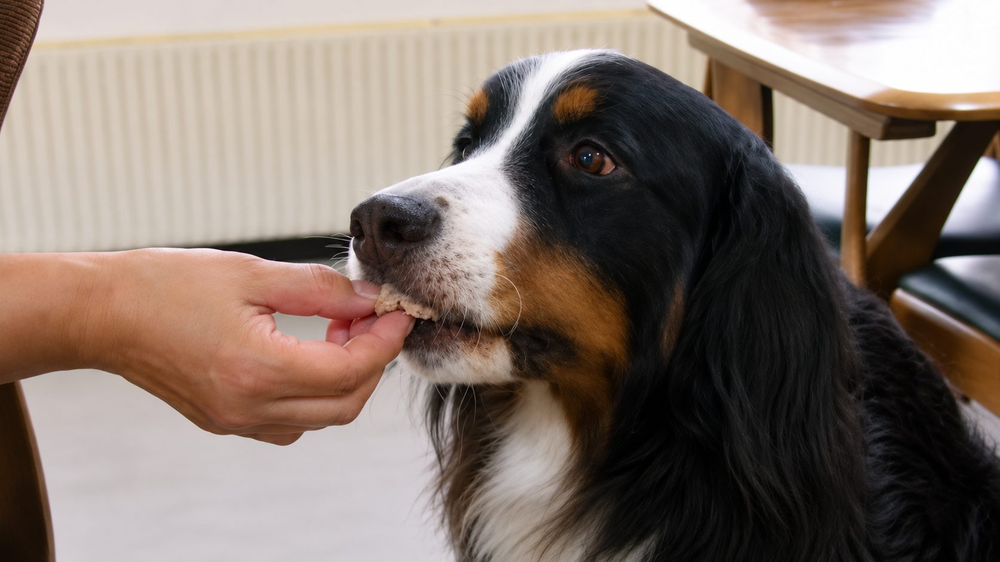
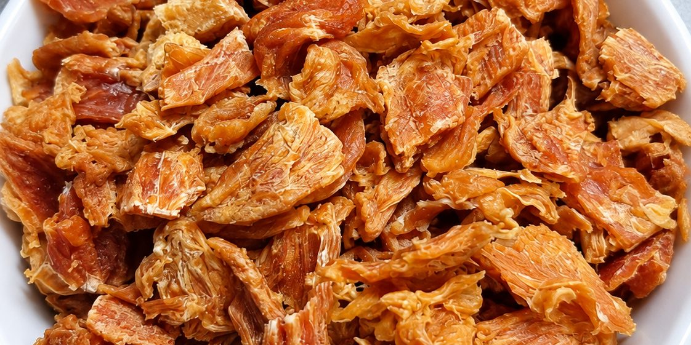
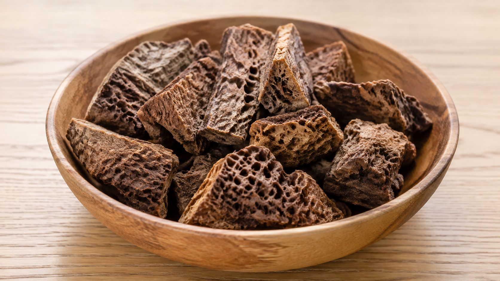

鶏ウィング
価格はショップでご確認ください（BASEの商品一覧に未掲載のため未確認）
カリッと香ばしいやみつきおやつ！ 鶏手羽先の先の部分を使用して、じっくり丁寧に作ったワンちゃんのためのおやつです。まずはボイルして余分な脂や不純物を取り除き、5時間かけて焦げないように焼き上げています。手で割れるほどカリカリサクサク。保存料不使用／無着色・無香料。
ショップで見る
愛犬のためのおやつを、ひとつずつお作りしています。

オヤツ屋さんDareは、愛犬のためのおやつをお作りしているお店です。毎日のごほうびに、そしてドッグランの帰りのおみやげに。店頭でのお求めのほか、オンラインショップからもご購入いただけます。
価格・内容量は、商品ページでご確認いただけます。
価格はショップでご確認ください（BASEの商品一覧に未掲載のため未確認）
カリッと香ばしいやみつきおやつ！ 鶏手羽先の先の部分を使用して、じっくり丁寧に作ったワンちゃんのためのおやつです。まずはボイルして余分な脂や不純物を取り除き、5時間かけて焦げないように焼き上げています。手で割れるほどカリカリサクサク。保存料不使用／無着色・無香料。
ショップで見る
500円／30g
自然の恵みを、愛犬の毎日に。低カロリー・高たんぱくで、軽い食感で食べやすいおやつです。シニア犬や小型犬にもおすすめ。保存料・着色料 無添加、手作りで丁寧に仕上げました。
ショップで見る
価格はショップでご確認ください（BASEの商品一覧に未掲載のため未確認）
鶏のとさかをじっくり乾燥させた、コリコリ楽しいおやつ。とさかはコラーゲンを豊富に含んだ栄養たっぷりの希少部位です。カリッとした部分と噛みごたえのある部分が楽しめます。国産鶏使用／保存料・着色料 無添加。
ショップで見る
各500円（ジャーキーは30g）
新鮮な国産鶏ささみを、じっくり乾燥焼きで仕上げました。手で持って与えられるスティックタイプは、噛んで食べる練習にも。小さくカットしたビッツタイプは、小型犬やごほうびにぴったりです。保存料・着色料不使用。
ショップで見る01
鶏ささみは新鮮な国産鶏を使用しています。素材の旨みをそのままお届けします。
02
時間をかけて焼き上げ、香ばしさと栄養をキープしています。手作りで一つ一つ丁寧に仕上げました。
03
保存料・着色料を使わず、シンプルな素材でお作りしています。賞味期限・保存方法はMTGで確認
| 店頭でのご購入 |
北海道苫小牧市沼ノ端中央1丁目2-24（ドッグランDare併設） ドッグランDareに隣接し、同時営業しています。ドッグランは10:00〜18:00・毎日営業（雨天休）ですが、おやつ屋さんの営業時間が同じかはMTGで確認 |
|---|---|
| オンラインショップ |
frienddare.base.shop よりご購入いただけます。 送料・お届け日数：ショップの設定内容を確認のうえ記載（仮） |
| お支払い方法 | 店頭：現金／各種カード等、オンライン：ショップの決済方法（仮・MTGで確定） |
| 卸・まとめ買いのご相談 | お問い合わせフォームよりご連絡ください。 |